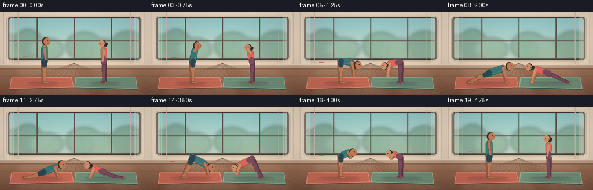
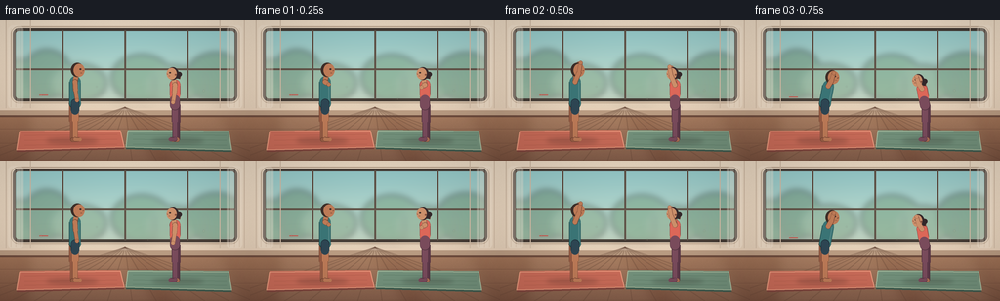

CODING AGENTS AS PIXEL WORLD MODELS
traex/DeepSeek-V4.1-Flash · instance_preservation_0030
点击播放 · 原生 RGB 像素
此结果可播放，但该运行尚未通过最终提交审核。页面展示不代表评测通过。
逐轮保存的候选
回放视频、检查图与代码变化。
每份候选均可单独播放。实际图片检查记录在下方工具轨迹中。
候选 01播放与检查图
点击播放 · 原生 RGB 像素


展开代码变化
--- 上一保存版本
+++ 本次保存版本
@@ -0,0 +1,723 @@
+from __future__ import annotations
+
+import math
+from pathlib import Path
+
+import numpy as np
+from PIL import Image, ImageDraw, ImageFilter
+
+import artifact_io
+
+
+ROOT = Path(__file__).resolve().parent
+W, H, FPS, N = 256, 144, 4.0, 20
+SS = 4
+RW, RH = W * SS, H * SS
+
+
+def rgb(hex_value: str) -> tuple[int, int, int]:
+ hex_value = hex_value.lstrip("#")
+ return tuple(int(hex_value[i : i + 2], 16) for i in (0, 2, 4))
+
+
+def mix(a: tuple[int, int, int], b: tuple[int, int, int], t: float) -> tuple[int, int, int]:
+ return tuple(round(a[i] * (1.0 - t) + b[i] * t) for i in range(3))
+
+
+def scaled_point(point: tuple[float, float]) -> tuple[float, float]:
+ return point[0] * SS, point[1] * SS
+
+
+def scaled_points(points: list[tuple[float, float]]) -> list[tuple[float, float]]:
+ return [scaled_point(point) for point in points]
+
+
+def rounded_mask(box: tuple[int, int, int, int], radius: int) -> Image.Image:
+ mask = Image.new("L", (RW, RH), 0)
+ draw = ImageDraw.Draw(mask)
+ draw.rounded_rectangle(tuple(v * SS for v in box), radius=radius * SS, fill=255)
+ return mask
+
+
+def make_background() -> Image.Image:
+ y = np.linspace(0.0, 1.0, RH, dtype=np.float32)[:, None]
+ wall_top = np.array(rgb("#EADCC8"), dtype=np.float32)
+ wall_bottom = np.array(rgb("#D8C6B1"), dtype=np.float32)
+ wall = wall_top * (1.0 - y[..., None]) + wall_bottom * y[..., None]
+ wall = np.repeat(wall, RW, axis=1)
+
+ floor_y = 98.0 / H
+ floor = np.zeros_like(wall)
+ floor_t = np.clip((y - floor_y) / (1.0 - floor_y), 0.0, 1.0)
+ floor_color = np.array(rgb("#9D7358"), dtype=np.float32)
+ floor_deep = np.array(rgb("#77513F"), dtype=np.float32)
+ floor[:] = floor_color * (1.0 - floor_t[..., None]) + floor_deep * floor_t[..., None]
+ wall = np.where(y[..., None] >= floor_y, floor, wall)
+
+ # Fine paper grain keeps the broad wall from looking synthetic.
+ rng = np.random.default_rng(14)
+ grain = rng.normal(0.0, 2.0, (RH, RW, 1)).astype(np.float32)
+ wall = np.clip(wall + grain, 0, 255).astype(np.uint8)
+ image = Image.fromarray(wall, "RGB")
+
+ # Window and a soft early-morning exterior.
+ box = (13, 8, 243, 83)
+ mask = rounded_mask(box, 6)
+ sky_top = np.array(rgb("#8DC9CE"), dtype=np.float32)
+ sky_bottom = np.array(rgb("#E5DFC2"), dtype=np.float32)
+ sky = np.zeros((RH, RW, 3), dtype=np.float32)
+ local_y = np.linspace(0.0, 1.0, RH, dtype=np.float32)[:, None, None]
+ sky[:] = sky_top * (1.0 - local_y) + sky_bottom * local_y
+ sky = Image.fromarray(np.clip(sky, 0, 255).astype(np.uint8), "RGB")
+
+ outside = Image.new("RGBA", (RW, RH), (0, 0, 0, 0))
+ od = ImageDraw.Draw(outside)
+ # Distant foliage, deliberately low contrast behind the yoga figures.
+ foliage = [
+ (20, 62, 30, 22, "#709B7D", 125),
+ (48, 55, 25, 25, "#638D73", 135),
+ (81, 64, 28, 19, "#7CA184", 120),
+ (145, 59, 31, 24, "#6D9979", 125),
+ (177, 66, 27, 20, "#7DA184", 120),
+ (221, 58, 31, 25, "#638E72", 135),
+ ]
+ for cx, cy, rx, ry, color, alpha in foliage:
+ od.ellipse(
+ ((cx - rx) * SS, (cy - ry) * SS, (cx + rx) * SS, (cy + ry) * SS),
+ fill=rgb(color) + (alpha,),
+ )
+ for x, y0, y1 in [(33, 53, 84), (158, 56, 84), (210, 51, 84)]:
+ od.line((x * SS, y0 * SS, x * SS, y1 * SS), fill=rgb("#59745F") + (105,), width=3 * SS)
+ outside = outside.filter(ImageFilter.GaussianBlur(3.2 * SS))
+ sky = Image.alpha_composite(sky.convert("RGBA"), outside).convert("RGB")
+ image.paste(sky, (0, 0), mask)
+
+ draw = ImageDraw.Draw(image)
+ frame = rgb("#5D5147")
+ frame_dark = rgb("#423A34")
+ draw.rounded_rectangle(
+ tuple(v * SS for v in box), radius=6 * SS, outline=frame_dark, width=3 * SS
+ )
+ for x in (64, 128, 192):
+ draw.line((x * SS, 10 * SS, x * SS, 81 * SS), fill=frame, width=2 * SS)
+ draw.line(
+ ((x + 1) * SS, 11 * SS, (x + 1) * SS, 80 * SS),
+ fill=rgb("#837367"),
+ width=1,
+ )
+ draw.line((15 * SS, 50 * SS, 241 * SS, 50 * SS), fill=frame, width=2 * SS)
+ draw.line((15 * SS, 51 * SS, 241 * SS, 51 * SS), fill=rgb("#8A7769"), width=1)
+ draw.rounded_rectangle(
+ (11 * SS, 6 * SS, 245 * SS, 85 * SS),
+ radius=8 * SS,
+ outline=rgb("#B6A28D"),
+ width=1 * SS,
+ )
+
+ # Sheer curtain folds at the edges of the glass.
+ curtain = Image.new("RGBA", (RW, RH), (0, 0, 0, 0))
+ cd = ImageDraw.Draw(curtain)
+ for x0, x1 in [(8, 24), (232, 248)]:
+ cd.rounded_rectangle(
+ (x0 * SS, 5 * SS, x1 * SS, 91 * SS),
+ radius=5 * SS,
+ fill=rgb("#F2E8D9") + (90,),
+ )
+ for x in np.linspace(x0 + 3, x1 - 3, 3):
+ cd.line((x * SS, 8 * SS, x * SS, 89 * SS), fill=rgb("#CBBBA8") + (42,), width=1 * SS)
+ image = Image.alpha_composite(image.convert("RGBA"), curtain).convert("RGB")
+
+ # Subtle sunlight falling from the window across the wall and floor.
+ rays = Image.new("RGBA", (RW, RH), (0, 0, 0, 0))
+ rd = ImageDraw.Draw(rays)
+ rd.polygon(
+ [
+ (28 * SS, 78 * SS),
+ (119 * SS, 78 * SS),
+ (164 * SS, 144 * SS),
+ (25 * SS, 144 * SS),
+ ],
+ fill=rgb("#FFF4D8") + (21,),
+ )
+ rd.polygon(
+ [
+ (142 * SS, 78 * SS),
+ (221 * SS, 78 * SS),
+ (253 * SS, 144 * SS),
+ (175 * SS, 144 * SS),
+ ],
+ fill=rgb("#FFF4D8") + (17,),
+ )
+ rays = rays.filter(ImageFilter.GaussianBlur(7 * SS))
+ image = Image.alpha_composite(image.convert("RGBA"), rays).convert("RGB")
+ draw = ImageDraw.Draw(image)
+
+ # Wall panel seams and the floor/baseboard transition.
+ for x in (6, 31, 225, 250):
+ draw.line((x * SS, 0, x * SS, 96 * SS), fill=rgb("#CDBBA7"), width=1 * SS)
+ draw.rectangle((0, 91 * SS, RW, 98 * SS), fill=rgb("#B69B83"))
+ draw.line((0, 91 * SS, RW, 91 * SS), fill=rgb("#E1CEB9"), width=2 * SS)
+ draw.line((0, 98 * SS, RW, 98 * SS), fill=rgb("#6C4C3E"), width=2 * SS)
+
+ # Wooden floor perspective.
+ floor_draw = ImageDraw.Draw(image, "RGBA")
+ vanish = (128 * SS, 89 * SS)
+ for bottom_x in range(-40, 300, 25):
+ floor_draw.line(
+ (vanish[0], vanish[1], bottom_x * SS, RH),
+ fill=rgb("#604334") + (80,),
+ width=1 * SS,
+ )
+ for y in (111, 126, 143):
+ floor_draw.line((0, y * SS, RW, y * SS), fill=rgb("#6E4B3B") + (75,), width=1 * SS)
+ floor_draw.line((0, (y + 1) * SS, RW, (y + 1) * SS), fill=rgb("#C09270") + (45,), width=1)
+
+ # Two mats with slightly different, muted colors.
+ left_mat = [(20, 113), (123, 112), (127, 130), (17, 133)]
+ right_mat = [(131, 112), (234, 113), (237, 133), (129, 130)]
+ draw.polygon(scaled_points([(x, y + 2) for x, y in left_mat]), fill=rgb("#7E463E"))
+ draw.polygon(scaled_points(left_mat), fill=rgb("#C56B59"))
+ draw.line(scaled_points([(20, 114), (123, 113), (127, 130), (17, 133), (20, 114)]), fill=rgb("#E79A7F"), width=1 * SS)
+ draw.polygon(scaled_points([(x, y + 2) for x, y in right_mat]), fill=rgb("#3F5C50"))
+ draw.polygon(scaled_points(right_mat), fill=rgb("#71917D"))
+ draw.line(scaled_points([(131, 113), (234, 114), (237, 133), (129, 130), (131, 113)]), fill=rgb("#A3B99E"), width=1 * SS)
+
+ # Sparse woven texture in the mats.
+ for y in (118, 123, 128):
+ draw.line((25 * SS, y * SS, 120 * SS, (y - 1) * SS), fill=rgb("#A95849") + (65,), width=1)
+ draw.line((136 * SS, (y - 1) * SS, 232 * SS, y * SS), fill=rgb("#557563") + (65,), width=1)
+
+ return image
+
+
+JOINT_NAMES = ("ankle", "knee", "hip", "shoulder", "neck", "head", "elbow", "wrist")
+
+POSES: dict[str, dict[str, tuple[float, float]]] = {
+ "mountain": {
+ "ankle": (0.0, -1.0),
+ "knee": (0.0, -20.0),
+ "hip": (0.0, -38.0),
+ "shoulder": (0.0, -60.0),
+ "neck": (1.0, -65.0),
+ "head": (3.0, -72.0),
+ "elbow": (0.5, -51.0),
+ "wrist": (2.0, -41.0),
+ },
+ "reach": {
+ "ankle": (0.0, -1.0),
+ "knee": (0.0, -20.0),
+ "hip": (0.0, -38.0),
+ "shoulder": (0.0, -60.0),
+ "neck": (1.0, -65.0),
+ "head": (3.0, -72.0),
+ "elbow": (4.0, -70.0),
+ "wrist": (6.0, -81.0),
+ },
+ "fold": {
+ "ankle": (0.0, -1.0),
+ "knee": (0.0, -20.0),
+ "hip": (0.0, -38.0),
+ "shoulder": (18.0, -36.0),
+ "neck": (23.0, -34.0),
+ "head": (29.0, -31.0),
+ "elbow": (21.0, -25.0),
+ "wrist": (23.0, -13.0),
+ },
+ "plank": {
+ "ankle": (-35.0, -1.0),
+ "knee": (-18.0, -9.0),
+ "hip": (0.0, -18.0),
+ "shoulder": (24.0, -26.0),
+ "neck": (29.0, -28.0),
+ "head": (36.0, -29.0),
+ "elbow": (28.0, -14.0),
+ "wrist": (31.0, -1.0),
+ },
+ "cobra": {
+ "ankle": (-34.0, -1.0),
+ "knee": (-18.0, -2.0),
+ "hip": (-1.0, -5.0),
+ "shoulder": (17.0, -19.0),
+ "neck": (22.0, -23.0),
+ "head": (29.0, -27.0),
+ "elbow": (19.0, -11.0),
+ "wrist": (24.0, -1.0),
+ },
+ "dog": {
+ "ankle": (-32.0, -1.0),
+ "knee": (-18.0, -7.0),
+ "hip": (0.0, -33.0),
+ "shoulder": (23.0, -15.0),
+ "neck": (28.0, -10.0),
+ "head": (34.0, -7.0),
+ "elbow": (29.0, -8.0),
+ "wrist": (31.0, -1.0),
+ },
+}
+
+KEYFRAMES = [
+ (0.00, "mountain"),
+ (0.12, "reach"),
+ (0.26, "fold"),
+ (0.40, "plank"),
+ (0.54, "cobra"),
+ (0.68, "dog"),
+ (0.80, "fold"),
+ (0.91, "reach"),
+ (1.00, "mountain"),
+]
+
+
+def smoothstep(value: float) -> float:
+ value = max(0.0, min(1.0, value))
+ return value * value * (3.0 - 2.0 * value)
+
+
+def pose_at(time_value: float) -> dict[str, tuple[float, float]]:
+ for (t0, name0), (t1, name1) in zip(KEYFRAMES[:-1], KEYFRAMES[1:]):
+ if time_value <= t1:
+ local = smoothstep((time_value - t0) / max(1e-8, t1 - t0))
+ a, b = POSES[name0], POSES[name1]
+ return {
+ joint: (
+ a[joint][0] * (1.0 - local) + b[joint][0] * local,
+ a[joint][1] * (1.0 - local) + b[joint][1] * local,
+ )
+ for joint in JOINT_NAMES
+ }
+ return dict(POSES["mountain"])
+
+
+def offset_point(
+ point: tuple[float, float], offset: tuple[float, float]
+) -> tuple[float, float]:
+ return point[0] + offset[0], point[1] + offset[1]
+
+
+def make_joints(
+ pose: dict[str, tuple[float, float]],
+ anchor_x: float,
+ ground_y: float,
+ direction: int,
+ scale: float,
+ side_offset: tuple[float, float],
+) -> dict[str, tuple[float, float]]:
+ result = {}
+ for joint, (x, y) in pose.items():
+ result[joint] = (
+ anchor_x + direction * (x + side_offset[0]) * scale,
+ ground_y + (y + side_offset[1]) * scale,
+ )
+ return result
+
+
+def draw_limb(
+ draw: ImageDraw.ImageDraw,
+ points: list[tuple[float, float]],
+ widths: list[float],
+ fill: tuple[int, int, int],
+ outline: tuple[int, int, int],
+) -> None:
+ scaled = scaled_points(points)
+ for index, (p0, p1) in enumerate(zip(scaled[:-1], scaled[1:])):
+ width = max(1, round(widths[index] * SS))
+ draw.line((p0, p1), fill=outline, width=width + 3)
+ draw.ellipse(
+ (p0[0] - width / 2 - 1.5, p0[1] - width / 2 - 1.5,
+ p0[0] + width / 2 + 1.5, p0[1] + width / 2 + 1.5),
+ fill=outline,
+ )
+ for index, (p0, p1) in enumerate(zip(scaled[:-1], scaled[1:])):
+ width = max(1, round(widths[index] * SS))
+ draw.line((p0, p1), fill=fill, width=width)
+ draw.ellipse(
+ (p0[0] - width / 2, p0[1] - width / 2,
+ p0[0] + width / 2, p0[1] + width / 2),
+ fill=fill,
+ )
+ end = scaled[-1]
+ end_width = max(1, round(widths[-1] * SS))
+ draw.ellipse(
+ (end[0] - end_width / 2, end[1] - end_width / 2,
+ end[0] + end_width / 2, end[1] + end_width / 2),
+ fill=fill,
+ )
+
+
+def draw_capsule(
+ draw: ImageDraw.ImageDraw,
+ p0: tuple[float, float],
+ p1: tuple[float, float],
+ width: float,
+ fill: tuple[int, int, int],
+ outline: tuple[int, int, int],
+) -> None:
+ draw_limb(draw, [p0, p1], [width, width], fill, outline)
+
+
+def draw_face(
+ draw: ImageDraw.ImageDraw,
+ head: tuple[float, float],
+ direction: int,
+ radius: float,
+ skin: tuple[int, int, int],
+ skin_dark: tuple[int, int, int],
+ hair: tuple[int, int, int],
+ female: bool,
+) -> None:
+ hx, hy = scaled_point(head)
+ rx = radius * 0.91 * SS
+ ry = radius * 1.02 * SS
+ back = -direction
+
+ # Ponytail or a compact short-hair silhouette.
+ if female:
+ tail_a = (hx + back * rx * 0.55, hy - ry * 0.18)
+ tail_b = (hx + back * rx * 1.25, hy + ry * 0.12)
+ tail_c = (hx + back * rx * 1.05, hy + ry * 0.82)
+ draw.line((tail_a, tail_b, tail_c), fill=skin_dark, width=round(radius * 0.62 * SS), joint="curve")
+ draw.line((tail_a, tail_b, tail_c), fill=hair, width=round(radius * 0.48 * SS), joint="curve")
+ draw.ellipse(
+ (tail_b[0] - 2.6 * SS, tail_b[1] - 2.6 * SS,
+ tail_b[0] + 2.6 * SS, tail_b[1] + 2.6 * SS),
+ fill=hair,
+ )
+
+ # Hair mass sits slightly behind the face.
+ draw.ellipse(
+ (hx - rx * 1.03 + back * 0.7 * SS, hy - ry * 1.02,
+ hx + rx * 1.03 + back * 0.7 * SS, hy + ry * 1.01),
+ fill=hair,
+ )
+ draw.ellipse(
+ (hx - rx * 0.86 + direction * 0.85 * SS, hy - ry * 0.91,
+ hx + rx * 0.94 + direction * 0.85 * SS, hy + ry * 0.96),
+ fill=skin,
+ )
+
+ # Nose, ear, eye, and a quiet closed mouth.
+ nose_tip = (hx + direction * rx * 0.94, hy + ry * 0.05)
+ draw.polygon(
+ [
+ (hx + direction * rx * 0.72, hy - ry * 0.14),
+ nose_tip,
+ (hx + direction * rx * 0.70, hy + ry * 0.20),
+ ],
+ fill=skin,
+ )
+ draw.line(
+ (hx + direction * rx * 0.76, hy + ry * 0.13, nose_tip[0], nose_tip[1]),
+ fill=skin_dark,
+ width=max(1, round(0.7 * SS)),
+ )
+ eye_x = hx + direction * rx * 0.38
+ eye_y = hy - ry * 0.12
+ draw.ellipse(
+ (eye_x - 1.0 * SS, eye_y - 0.65 * SS, eye_x + 1.0 * SS, eye_y + 0.65 * SS),
+ fill=rgb("#352B2A"),
+ )
+ draw.line(
+ (
+ hx + direction * rx * 0.40,
+ hy + ry * 0.39,
+ hx + direction * rx * 0.66,
+ hy + ry * 0.41,
+ ),
+ fill=skin_dark,
+ width=max(1, round(0.55 * SS)),
+ )
+ if female:
+ ear_x = hx - direction * rx * 0.63
+ draw.ellipse(
+ (ear_x - 0.9 * SS, hy + ry * 0.03,
+ ear_x + 0.9 * SS, hy + ry * 0.30),
+ fill=skin_dark,
+ )
+
+
+def draw_person(
+ draw: ImageDraw.ImageDraw,
+ pose: dict[str, tuple[float, float]],
+ anchor_x: float,
+ ground_y: float,
+ direction: int,
+ scale: float,
+ female: bool,
+ phase: float,
+) -> None:
+ if female:
+ skin = rgb("#C88F6C")
+ skin_far = rgb("#A86F56")
+ skin_dark = rgb("#84513F")
+ top = rgb("#D9675A")
+ top_far = rgb("#AF4F49")
+ top_dark = rgb("#7F3738")
+ lower = rgb("#774B5D")
+ lower_far = rgb("#5C394A")
+ lower_dark = rgb("#482D3A")
+ hair = rgb("#33282B")
+ torso_width = 9.2
+ head_radius = 6.6
+ else:
+ skin = rgb("#B97A58")
+ skin_far = rgb("#965E47")
+ skin_dark = rgb("#704333")
+ top = rgb("#397477")
+ top_far = rgb("#285A5D")
+ top_dark = rgb("#193F43")
+ lower = rgb("#2D4553")
+ lower_far = rgb("#213642")
+ lower_dark = rgb("#172832")
+ hair = rgb("#3B2D28")
+ torso_width = 11.2
+ head_radius = 7.0
+
+ near = (0.9, 0.0)
+ far = (-1.7, 0.55)
+ near_j = make_joints(pose, anchor_x, ground_y, direction, scale, near)
+ far_j = make_joints(pose, anchor_x, ground_y, direction, scale, far)
+
+ # Far-side limbs sit behind the body in a darker tone.
+ draw_limb(
+ draw,
+ [far_j["hip"], far_j["knee"], far_j["ankle"]],
+ [6.5 if not female else 5.6, 4.8 if not female else 4.3],
+ lower_far if female else skin_far,
+ lower_dark if female else skin_dark,
+ )
+ draw_limb(
+ draw,
+ [far_j["shoulder"], far_j["elbow"], far_j["wrist"]],
+ [4.3, 3.3],
+ skin_far,
+ skin_dark,
+ )
+
+ # Near leg. The man has bare legs; the woman's leggings cover both.
+ leg_fill = lower if female else skin
+ leg_outline = lower_dark if female else skin_dark
+ draw_limb(
+ draw,
+ [near_j["hip"], near_j["knee"], near_j["ankle"]],
+ [6.9 if not female else 5.9, 5.0 if not female else 4.5],
+ leg_fill,
+ leg_outline,
+ )
+
+ # Torso and clothing.
+ if female:
+ draw_capsule(draw, near_j["hip"], near_j["shoulder"], torso_width, skin, skin_dark)
+ top_end = (
+ near_j["shoulder"][0] * 0.48 + near_j["hip"][0] * 0.52,
+ near_j["shoulder"][1] * 0.48 + near_j["hip"][1] * 0.52,
+ )
+ draw_capsule(draw, near_j["shoulder"], top_end, torso_width + 1.1, top, top_dark)
+ waist = (
+ near_j["hip"][0] * 0.74 + near_j["shoulder"][0] * 0.26,
+ near_j["hip"][1] * 0.74 + near_j["shoulder"][1] * 0.26,
+ )
+ draw_capsule(draw, near_j["hip"], waist, torso_width + 0.4, lower, lower_dark)
+ draw.line(
+ (
+ top_end[0] - direction * 4.6 * scale * SS,
+ top_end[1] * SS,
+ top_end[0] + direction * 4.6 * scale * SS,
+ top_end[1] * SS,
+ ),
+ fill=mix(top, top_dark, 0.25),
+ width=max(1, round(1.0 * SS)),
+ )
+ else:
+ draw_capsule(draw, near_j["hip"], near_j["shoulder"], torso_width, top, top_dark)
+ # Tank-top highlight and hem.
+ dx = near_j["shoulder"][0] - near_j["hip"][0]
+ dy = near_j["shoulder"][1] - near_j["hip"][1]
+ length = max(1e-6, math.hypot(dx, dy))
+ nx, ny = -dy / length, dx / length
+ draw.line(
+ (
+ (near_j["hip"][0] + nx * 3.0 + direction * 1.0) * SS,
+ (near_j["hip"][1] + ny * 3.0) * SS,
+ (near_j["shoulder"][0] + nx * 3.0 + direction * 1.0) * SS,
+ (near_j["shoulder"][1] + ny * 3.0) * SS,
+ ),
+ fill=mix(top, rgb("#FFFFFF"), 0.12),
+ width=max(1, round(1.1 * SS)),
+ )
+ draw.line(
+ (
+ (near_j["hip"][0] - torso_width * 0.38) * SS,
+ near_j["hip"][1] * SS,
+ (near_j["hip"][0] + torso_width * 0.38) * SS,
+ near_j["hip"][1] * SS,
+ ),
+ fill=top_dark,
+ width=max(1, round(0.8 * SS)),
+ )
+
+ # Man's shorts.
+ if not female:
+ short_end = (
+ near_j["hip"][0] * 0.58 + near_j["knee"][0] * 0.42,
+ near_j["hip"][1] * 0.58 + near_j["knee"][1] * 0.42,
+ )
+ draw_capsule(draw, near_j["hip"], short_end, 8.0, lower, lower_dark)
+
+ # Neck, head, and hair.
+ draw_capsule(draw, near_j["shoulder"], near_j["neck"], 4.4, skin, skin_dark)
+ draw_face(
+ draw,
+ near_j["head"],
+ direction,
+ head_radius * scale,
+ skin,
+ skin_dark,
+ hair,
+ female,
+ )
+
+ # Near arm is in front, making its bend legible against the torso.
+ draw_limb(
+ draw,
+ [near_j["shoulder"], near_j["elbow"], near_j["wrist"]],
+ [4.5, 3.4],
+ skin,
+ skin_dark,
+ )
+
+ # Hands and bare feet.
+ wrist = scaled_point(near_j["wrist"])
+ draw.ellipse(
+ (wrist[0] - 2.0 * SS, wrist[1] - 2.0 * SS,
+ wrist[0] + 2.0 * SS, wrist[1] + 2.0 * SS),
+ fill=skin,
+ outline=skin_dark,
+ width=1,
+ )
+ for joints, fill_color, outline_color in [
+ (far_j, skin_far, skin_dark),
+ (near_j, skin if not female else lower, skin_dark if not female else lower_dark),
+ ]:
+ ankle = joints["ankle"]
+ foot_end = (ankle[0] + direction * 5.0 * scale, ankle[1] + 0.3)
+ draw_capsule(draw, ankle, foot_end, 3.4 if not female else 3.8, fill_color, outline_color)
+
+
+def draw_shadows(image: Image.Image, time_value: float) -> Image.Image:
+ shadow = Image.new("RGBA", (RW, RH), (0, 0, 0, 0))
+ draw = ImageDraw.Draw(shadow)
+ for anchor_x, direction, scale in [(76.0, 1, 1.0), (180.0, -1, 0.95)]:
+ pose = pose_at(time_value)
+ hip = pose["hip"]
+ extent = 37.0
+ if time_value > 0.30:
+ extent = 49.0
+ cx = anchor_x + direction * (hip[0] - 2.0) * scale
+ cy = 124.0
+ draw.ellipse(
+ (
+ (cx - extent * 0.72) * SS,
+ (cy - 3.6) * SS,
+ (cx + extent * 0.72) * SS,
+ (cy + 3.4) * SS,
+ ),
+ fill=(38, 27, 25, 52),
+ )
+ for joint_name in ("ankle", "wrist"):
+ j = pose[joint_name]
+ x = anchor_x + direction * j[0] * scale
+ y = 123.0 + j[1] * scale
+ if y > 118.5:
+ draw.ellipse(
+ ((x - 5.0) * SS, (y - 1.0) * SS, (x + 5.0) * SS, (y + 1.6) * SS),
+ fill=(35, 25, 22, 55),
+ )
+ shadow = shadow.filter(ImageFilter.GaussianBlur(2.2 * SS))
+ return Image.alpha_composite(image.convert("RGBA"), shadow).convert("RGB")
+
+
+def add_dust_motes(image: Image.Image, frame_index: int) -> Image.Image:
+ motes = Image.new("RGBA", (RW, RH), (0, 0, 0, 0))
+ draw = ImageDraw.Draw(motes)
+ specs = [
+ (42, 77, 0.8, 0.11),
+ (96, 68, 0.6, 0.08),
+ (153, 81, 0.7, 0.12),
+ (211, 72, 0.8, 0.09),
+ (68, 91, 0.6, 0.10),
+ (185, 89, 0.5, 0.07),
+ ]
+ for index, (x, y, radius, speed) in enumerate(specs):
+ px = x + math.sin(frame_index * speed + index * 1.8) * 3.0
+ py = y - (frame_index * speed * 0.7) % 9.0
+ draw.ellipse(
+ (
+ (px - radius) * SS,
+ (py - radius) * SS,
+ (px + radius) * SS,
+ (py + radius) * SS,
+ ),
+ fill=rgb("#FFF4D2") + (48,),
+ )
+ motes = motes.filter(ImageFilter.GaussianBlur(0.45 * SS))
+ return Image.alpha_composite(image.convert("RGBA"), motes).convert("RGB")
+
+
+def finish_image(image: Image.Image) -> Image.Image:
+ array = np.asarray(image).astype(np.float32)
+ yy, xx = np.mgrid[0:RH, 0:RW]
+ nx = (xx - RW / 2.0) / (RW / 2.0)
+ ny = (yy - RH / 2.0) / (RH / 2.0)
+ radius = np.sqrt(nx * nx + ny * ny)
+ vignette = 1.0 - 0.13 * np.clip((radius - 0.48) / 0.90, 0.0, 1.0)
+ array *= vignette[..., None]
+ # A gentle warm grade, strongest in the highlights.
+ array[..., 0] *= 1.018
+ array[..., 2] *= 0.988
+ array = np.clip(array, 0, 255).astype(np.uint8)
+ high = Image.fromarray(array, "RGB")
+ return high.resize((W, H), Image.Resampling.LANCZOS)
+
+
+def render_frame(frame_index: int, background: Image.Image) -> Image.Image:
+ time_value = frame_index / (N - 1)
+ image = draw_shadows(background.copy(), time_value)
+ art = Image.new("RGBA", (RW, RH), (0, 0, 0, 0))
+ draw = ImageDraw.Draw(art)
+
+ pose = pose_at(time_value)
+ # The man and woman face one another and move as a quiet synchronized pair.
+ draw_person(draw, pose, 76.0, 123.0, 1, 1.00, False, time_value)
+ draw_person(draw, pose, 180.0, 123.0, -1, 0.95, True, time_value)
+
+ image = Image.alpha_composite(image.convert("RGBA"), art).convert("RGB")
+ image = add_dust_motes(image, frame_index)
+ return finish_image(image)
+
+
+def main() -> None:
+ background = make_background()
+ frames = np.stack([np.asarray(render_frame(index, background), dtype=np.uint8) for index in range(N)])
+ artifact_io.save(frames, ROOT)
+
+ # A direct MP4 is useful for previewing the same RGB sequence outside the HTML player.
+ try:
+ import cv2
+
+ writer = cv2.VideoWriter(
+ str(ROOT / "yoga_rgb.mp4"),
+ cv2.VideoWriter_fourcc(*"mp4v"),
+ FPS,
+ (W, H),
+ )
+ for frame in frames:
+ writer.write(cv2.cvtColor(frame, cv2.COLOR_RGB2BGR))
+ writer.release()
+ except Exception:
+ pass
+
+ print(f"Generated {frames.shape} RGB frames at {FPS:g} fps")
+
+
+if __name__ == "__main__":
+ main()
可观测工具轨迹
实际执行的命令与返回图片。
命令 1exit 0
/bin/bash -c 'cat prompt.txt'
命令 2exit 0
/bin/bash -c 'cat GENERATION_RULES.md'
命令 3exit 0
/bin/bash -c 'cat task_spec.json'
命令 4exit 0
/bin/bash -c "find . -maxdepth 2 -type f -printf '%p\\n' | sort"
命令 5exit 0
/bin/bash -c "sed -n '1,240p' artifact_io.py"
命令 6exit 0
/bin/bash -c "sed -n '1,240p' player_template.html"
命令 7exit 0
/bin/bash -c "python - <<'PY' import importlib.util for m in ['numpy','PIL','cv2','imageio','matplotlib']: print(m, bool(importlib.util.find_spec(m))) PY"
命令 8exit 0
/bin/bash -c 'command -v ffmpeg || true; command -v chafa || true; command -v img2txt || true'
命令 9exit 0
/bin/bash -c 'git status --short'
命令 10exit 0
/bin/bash -c 'command -v convert || true; command -v magick || true; command -v viu || true; command -v jp2 || true'
命令 11exit 0
/bin/bash -c 'python generate.py'
命令 12exit 0
/bin/bash -c "python - <<'PY'
import numpy as np
from pathlib import Path
z=np.load('pixels.npz')['pixels']
print('pixels',z.shape,z.dtype)
# unpack frames and calculate frame-to-frame changes
frames=np.stack([(z>>16)&255,(z>>8)&255,z&255],axis=-1).transpose(0,2,3,1)
print('range', frames.min(), frames.max())
for i in range(1,20):
d=np.abs(frames[i].astype(int)-frames[i-1].astype(int))
print(f'{i:02d}: changed={np.any(d,axis=2).mean():.3f} mean={d.mean():.2f} max={d.max()}')
PY"命令 13exit 0
/bin/bash -c "python - <<'PY'
from PIL import Image
import numpy as np
for i in range(20):
a=np.asarray(Image.open(f'frames/{i:02d}.png')).astype(float)
print(i, a.mean(axis=(0,1)).round(1), a.std(axis=(0,1)).mean().round(1), a[0,0],a[70,128])
PY"命令 14exit 1
/bin/bash -c "python - <<'PY'
from PIL import Image
im=Image.open('inspection.png')
print(im.size)
im.resize((1024,330)).save('/tmp/yoga_inspection_large.png')
PY"命令 15exit 0
/bin/bash -c "python - <<'PY'
from PIL import Image, ImageOps, ImageEnhance
chars=' .:-=+*#%@'
for n in [0,3,5,6,7,8,9,10,11,12,13,15,17,19]:
im=Image.open(f'frames/{n:02d}.png').convert('L')
im=ImageOps.autocontrast(im)
im=im.resize((64,36),Image.Resampling.LANCZOS)
print(f'\\nFRAME {n:02d}')
for y in range(36):
print(''.join(chars[p*len(chars)//256] for p in [im.getpixel((x,y)) for x in range(64)]))
PY"命令 16exit 0
/bin/bash -c "python - <<'PY'
from PIL import Image
import numpy as np
im=np.asarray(Image.open('frames/00.png')).astype(int)
# inspect pixels at expected figure areas, list quantized color clusters there
for box in [(45,40,110,125),(145,40,210,125)]:
x0,y0,x1,y1=box
a=im[y0:y1,x0:x1].reshape(-1,3)
# dark colors only (figures mostly darker than bg)
mask=a.max(1)<170
colors,c=np.unique((a[mask]//8)*8,axis=0,return_counts=True)
idx=np.argsort(c)[-20:][::-1]
print(box)
for i in idx: print(colors[i],c[i])
PY"命令 17exit 0
/bin/bash -c "python - <<'PY'
from PIL import Image
import numpy as np
f=np.stack([np.asarray(Image.open(f'frames/{i:02d}.png')) for i in range(20)]).astype(float)
print(f.shape)
for i in range(1,20):
d=np.abs(f[i]-f[i-1])
print(f'{i:02d}: changed={np.any(d>2,axis=2).mean():.3f} mean={d.mean():.2f} p99={np.percentile(d,99):.1f} max={d.max():.0f}')
PY"命令 18exit 0
/bin/bash -c 'python -m py_compile generate.py'
命令 19exit 0
/bin/bash -c 'ls -lh pixels.npz index.html inspection.png transition_check.png yoga_rgb.mp4 frames/00.png frames/19.png'
命令 20exit 0
/bin/bash -c "python - <<'PY'
import cv2
cap=cv2.VideoCapture('yoga_rgb.mp4')
print('opened',cap.isOpened(),'frames',cap.get(cv2.CAP_PROP_FRAME_COUNT),'fps',cap.get(cv2.CAP_PROP_FPS),'size',int(cap.get(cv2.CAP_PROP_FRAME_WIDTH)),int(cap.get(cv2.CAP_PROP_FRAME_HEIGHT)))
ok=True;n=0
while True:
ok2,fr=cap.read()
if not ok2: break
n+=1
if n==1: print('first range',fr.min(),fr.max(),fr.mean())
print('decoded',n)
PY"命令 21exit 0
/bin/bash -c 'command -v node || true'
命令 22exit 0
/bin/bash -c "python - <<'PY'
import cv2, numpy as np
im=cv2.imread('frames/00.png')[:,:,::-1]
crop=im[34:126,38:218]
# quantize colors to 10 deterministic clusters and print a compact semantic map
pix=crop.reshape(-1,3).astype(np.float32)
cv2.setRNGSeed(7)
_,lab,cent=cv2.kmeans(pix,10,None,(cv2.TERM_CRITERIA_EPS+cv2.TERM_CRITERIA_MAX_ITER,50,.1),3,cv2.KMEANS_PP_CENTERS)
cent=cent.astype(int)
print('clusters')
for i,c in enumerate(cent): print(i,c)
lab=lab.reshape(crop.shape[:2])
chars='0123456789'
# 2x2 blocks, label most frequent cluster
for y in range(0,lab.shape[0]-1,2):
print(''.join(chars[np.bincount(lab[y:y+2,x:x+2].ravel(),minlength=10).argmax()] for x in range(0,lab.shape[1]-1,2)))
PY"命令 23exit 0
/bin/bash -c "python - <<'PY'
import cv2, numpy as np
im=cv2.imread('frames/00.png')
# Isolate the figure-colored pixels in each mat region, excluding the warm window/background.
hsv=cv2.cvtColor(im,cv2.COLOR_BGR2HSV)
for name,(x0,x1) in {'man':(42,112),'woman':(146,215)}.items():
roi=im[36:125,x0:x1]
# figures have dark outlines and saturated clothing/skin; background wall is bright and low sat
s=roi.max(2)-roi.min(2)
v=roi.max(2)
m=((v<205)&(s>20)) | (v<115)
ys,xs=np.where(m)
print(name,'bbox', (xs.min()+x0,ys.min()+36,xs.max()+x0,ys.max()+36),'pixels',len(xs),'centroid',(xs.mean()+x0,ys.mean()+36))
PY"命令 24exit 0
/bin/bash -c "python - <<'PY'
from PIL import Image
import numpy as np
for i in range(20):
a=np.asarray(Image.open(f'frames/{i:02d}.png'))
# measure silhouette in the man's panel excluding window and mat
roi=a[35:125,42:113].astype(int)
s=roi.max(2)-roi.min(2); v=roi.max(2)
m=((v<205)&(s>25))|(v<110)
ys,xs=np.where(m)
print(f'{i:02d} bbox=({xs.min()+42},{ys.min()+35})-({xs.max()+42},{ys.max()+35}) n={len(xs)}')
PY"命令 25exit 0
/bin/bash -c "python - <<'PY'
import re
from pathlib import Path
s=Path('index.html').read_text()
m=re.search(r'const DATA=(\\{.*?\\}),W=DATA',s)
print('payload',bool(m),'bytes',len(m.group(1)) if m else None)
print('placeholder left', '__DATA__' in s or '__ID__' in s)
PY"命令 26exit 0
/bin/bash -c 'git status --short -- .'
保存候选 1 份；完成命令 26 次；可验证图片返回 0 张。原始 API 响应与完整日志保留在本地。